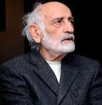

Սոս Սարգսյան
Կենսագրություն
Սոս Արտաշեսի Սարգսյան (հոկտեմբերի 24, 1929, Ստեփանավան, Հայաստան - սեպտեմբերի 26, 2013, Երևան, Հայաստան), թատրոնի և կինոյի հայ մեծանուն դերասան, ԽՍՀՄ ժողովրդական արտիստ։
Ծնվել է 1929 թվականի հոկտեմբերի 24-ին Ստեփանավան քաղաքում։ Բեմական առաջին քայլերը կատարել է Ստեփանավանի պետական թատրոնում։ 1948 թվականին տեղափոխվել է Երևան և աշխատել Երևանի պատանի հանդիսատեսի թատրոնում՝ որպես դերասան։ 1954 թվականին ավարտել է Երևանի գեղարվեստաթատերական ինստիտուտի դերասանական ֆակուլտետը։
1954-1991 թվականներին եղել է Երևանի Գաբրիել Սունդուկյանի անվան ակադեմիական թատրոնի դերասան։ 1991 թվականին հիմնադրել է Համազգային թատրոնը։ Նույն թվականին նա Հայ Հեղափոխական Դաշնակցություն կուսակցության կողմից առաջադրվել է որպես նորանկախ Հայաստանի Հանրապետության առաջին նախագահի թեկնածու։
1997-2006 թվականներին եղել է Երևանի թատրոնի և կինոյի պետական ինստիտուտի ռեկտոր, իսկ 2006 թվականից՝ ինստիտուտի կառավարման խորհրդի նախագահ։ 2009 թվականին ընտրվել է ՀՀ Հանրային խորհրդի անդամ։
Նկարահանվել է քառասունից ավելի գեղարվեստական ֆիլմերում, որոնցից են՝ «Նվագախմբի տղաները», «Եռանկյունի», «Մենք ենք, մեր սարերը», «Նահապետ», «Խաթաբալա», «Ձորի Միրո», «Սոլյարիս» և այլ ֆիլմեր՝ նկարահանված Հայաստանում և ԽՍՀՄ տարածքում։
Ռուսաստանցի բեմադրիչների ֆիլմերում հատկապես նշանավոր են նրա կերպարները՝ Գիբարյան (Տարկովսկու «Սոլյարիս»), թափառիկ արտիստ (Վ. Բորտկոյի «Առանց ընտանիքի»), Ֆեոֆան Պրոկոպովիչ (Ա. Պրոշկինի «Միխայլո Լոմոնոսով» ֆիլմում)։
Մահացել է 2013 թվականի սեպտեմբերի 26-ին՝ թոքաբորբից։
ԽՍՀՄ և ՀԽՍՀ ժողովրդական արտիստ, Համազգային պետական թատրոնի հիմնադիր Սոս Սարգսյանի ծննդյան օրը՝ հոկտեմբերի 24-ին, իր ծննդավայր Ստեփանավանում՝ իր անունը կրող փողոցի վրա գտնվող այգում բացվել է քանդակագործ Դավիթ Մինասյանի հեղինակած հուշարձանը։ 2015 թվականի հոկտեմբերի 24-ին, Երևանում՝ Տերյան 65 հասցեում, որտեղ բնակվել է վարպետը, բացվել է նրա հիշատակին նվիրված հուշատախտակ։